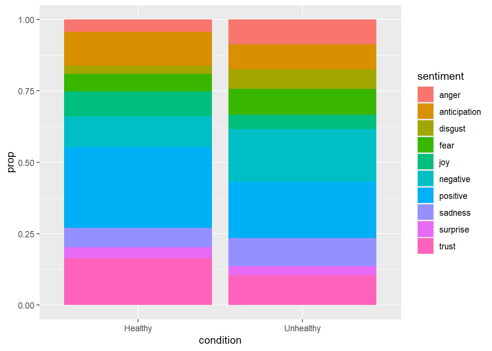

For this project, I am working with a large scale qualitative data set of responses to a research question by adult employees in the United States. There are over 50,000 words housed in several hundred rows of participant responses and it is of interest to the researcher (me) to understand if there are unique words used in one particular condition. It was also of interest to determine if the characteristics of participant’s shaped what words they utilized to respond to the experimental prompt.
Tokenization and Data Cleaning
I decided to use Natural Language Processing, in particular sentiment analysis, to analyze the words present in the data set. I also decided to set my tokenization parameter at the word level.
First, I need to load in the data and set the tokenization of the text corpus.
# A tibble: 6 × 2
ProlificID word
<chr> <chr>
1 5e8ea20ad1aa0d164f407023 <NA>
2 6029785ce4c6ff34c77a50ea <NA>
3 60380d3c5275b918ad26e8b5 <NA>
4 5d9e9204340c7700150ab74c last
5 5d9e9204340c7700150ab74c week
6 5d9e9204340c7700150ab74c one
I can see that the tokenization was successful since each word has been separated as its own row, grouped at the participant level. Now lets look at some basic things such as word frequencies and counts.
head(HealthResp_tidy %>%count(word, sort=TRUE), n =10)
# A tibble: 10 × 2
word n
<chr> <int>
1 to 1008
2 and 988
3 i 952
4 the 746
5 a 732
6 my 562
7 was 489
8 of 410
9 me 407
10 that 376
As revealed in the tibble above, the 10 most used words are articles and connectives, and likely will not be of use to my analysis. I want to remove these words but also take a conservative approach so that I don’t remove too many words that might be of interest. The tidytext package has a data set called “stop_words” containing a lexicon of words comprised of article words such as “to”, “and”, “the” which I would like to remove.
# A tibble: 10 × 2
word n
<chr> <int>
1 time 110
2 job 95
3 environment 87
4 feel 83
5 team 77
6 healthy 74
7 stands 72
8 boss 67
9 day 65
10 moment 56
Now the most frequent words better reflect words of interest to my sentiment analysis. Before moving forward, I visualized the frequency of words that occurred over 50 times in participant’s responses.
I also created a word cloud visualization of these words, setting the parameters to a max of 50 words used in the visualization.
library(wordcloud)library(RColorBrewer)HealthResp_Freq %>%with(wordcloud(word, n, max.words =100, colors =brewer.pal(12, "Paired"), scale=c(3.5,0.25)))
You may have noticed that I have only been analyzing words from one condition, called healthy. It is now time to repeat the above analysis for the second condition, called unhealthy.
# A tibble: 10 × 3
word Healthy Unhealthy
<chr> <dbl> <dbl>
1 ago 0.00333 0.00325
2 angry 0.000513 0.00302
3 bad 0.00154 0.00290
4 boss 0.00859 0.00835
5 call 0.00128 0.00209
6 called 0.00179 0.00255
7 care 0.00359 0.00104
8 cared 0.00218 0.000696
9 client 0.000897 0.00290
10 comfortable 0.00205 0.00139
This new data frame contains three columns: the first column contains the utilized words, the second column is the proportion that a particular word appears across all words used in the healthy condition, the third column is the same as the second column except the proportion is compared to words used in the unhealthy condition. Like above, it is important to visualize these words in conjunction to each other.
Words closer to the diagonal line appear at similar rates in both conditions while words farther out to the top-left or bottom-right occur more in the unhealthy or healthy condition, respectively. For example, words like coworker, manager, job, and COVID are right on the diagonal line, indicating that they occurred for similar proportions in both conditions. This makes sense as the original prompt presented to participants asked about their job experiences in 2020-21. However, words like care, supportive, and understanding occurred more frequently in the healthy condition while words like angry, uncomfortable, and bad occurred more often in the unhealthy condition.
Sentiment Analysis
Now that I have a good feel about the sorts of words that participants used to describe their work experiences across and within conditions, I want to analyze the word tokens for emotional valance (i.e., the general perception of positive or negative contained within the words used in each condition).
library(textdata)nrc <-get_sentiments("nrc")AFINN <-get_sentiments("afinn")BING <-get_sentiments("bing")sort(unique(nrc$sentiment)) #Use this to see the unique codes that are present in the nrc sentiment column
The nrc, afinn, and bing sentiments compare a corpus of words to their predefined emotions or word valance lexicons. For example, evaluating corpus sentiments using the nrc column evaluates the degree of emotions or feelings like anger, anticipation, and disgust present in the analyzed corpus. You can find more detailed information about the nrc sentiment data frame here.
Because I want to provide evidence that the experimental conditions produced differently valanced words in either condition, determining how positive or negative the overall words used in either condition is important. I will first analyze by a particular emotion and then will use all three popular sentiment lexicons to get a more complete understanding of the sentiments that participants had in both conditions.
#Look at the proportion of fear based words per conditioncondition_fear <- nrc %>%filter(sentiment =="fear") %>%inner_join(wordfreq, by ="word") %>%arrange(desc(proportion))head(condition_fear, 20)
# A tibble: 20 × 5
word sentiment condition n proportion
<chr> <chr> <chr> <int> <dbl>
1 unhealthy fear Unhealthy 76 0.00882
2 feeling fear Healthy 27 0.00346
3 bad fear Unhealthy 25 0.00290
4 pandemic fear Healthy 14 0.00179
5 feeling fear Unhealthy 15 0.00174
6 pandemic fear Unhealthy 15 0.00174
7 bad fear Healthy 12 0.00154
8 difficult fear Healthy 11 0.00141
9 worry fear Healthy 10 0.00128
10 insecure fear Unhealthy 10 0.00116
11 change fear Healthy 9 0.00115
12 difficult fear Unhealthy 9 0.00104
13 fire fear Unhealthy 9 0.00104
14 hospital fear Healthy 8 0.00103
15 hostile fear Unhealthy 8 0.000928
16 nervous fear Healthy 7 0.000897
17 punished fear Unhealthy 6 0.000696
18 afraid fear Healthy 5 0.000641
19 honest fear Healthy 5 0.000641
20 medical fear Healthy 5 0.000641
Just by looking at the fear emotion alone, I have determined that both conditions use fear words pretty regularly. This likely captures some of the COVID anxiety that participants described in their responses across both conditions. However, looking at the proportion of these words, the most used fear word, “unhealthy”, occurs three or more times as much as any other word and occurred at this rate in the unhealthy condition. While expected, this does provide evidence that participants are at least paying attention to the instruction prompts in their respective conditions.
Visualization
Now I will expand this analysis to all sentiment categories contained in the nrc lexicon and provide some visualizations of this data.
#Distribution of sentiments across both conditions using nrc (this uses positive/negative/ and 8 emotion words)dist_sentiments <- nrc %>%inner_join(wordfreq, by ="word") %>%group_by(condition, sentiment) %>%summarize(n =sum(n)) %>%mutate(prop = n/sum(n)) %>%arrange(desc(prop))dist_sentiments
ggplot(data = dist_sentiments, mapping =aes(x = condition, y = prop, fill = sentiment)) +geom_bar(stat ="identity")

Results of this sentiment analysis support the effectiveness of the experiment: that is, participants in the healthy condition provided a greater proportion of positively-valanced words than participants in the unhealthy condition (28.3% vs. 19.7% of words), and participants provided a greater proportion of negatively-valanced words in the unhealthy condition than those in the healthy condition (18.7% vs. 10.8%). Glancing at the ggplot also highlights a greater proportion of anger, disgust, fear and sadness words in the unhealthy condition and a greater proportion of anticipation, joy, and trust words in the healthy condition.
For the sake of robustness, I will also analyse the corpus of words using the BING and AFINN lexicons. The results should converge on the same point but may be slightly different as different words are used to create each specific lexicon.
#Look at different sentiment lexicons - BING (just positive/negative)dist_sentimentsbing <- BING %>%inner_join(wordfreq, by ="word") %>%group_by(condition, sentiment) %>%summarize(n =sum(n)) %>%mutate(prop = n/sum(n))dist_sentimentsbing
ggplot(data = dist_sentimentsbing, mapping =aes(x = condition, y = prop, fill = sentiment)) +geom_bar(stat ="identity")
#AFINN lexicon - This uses a scale ranging from 5- -5 with higher values indicating more positively associated words; 0 is neutraldist_sentimentsAFINN <- AFINN %>%inner_join(wordfreq, by ="word") %>%group_by(condition, value) %>%summarize(n =sum(n)) %>%mutate(prop = n/sum(n)) dist_sentimentsAFINN
ggplot(data = dist_sentimentsAFINN, mapping =aes(x = condition, y = prop, fill = value)) +geom_bar(stat ="identity")
Just as I predicted, the results converge on the same point! An additional piece of information gleamed from the AFINN sentiment analysis is that no participant in either condition utilized verbiage that could be classified as extremely positive (a score of 5 in AFINN) or extremely negative (a score of -5 in AFINN).